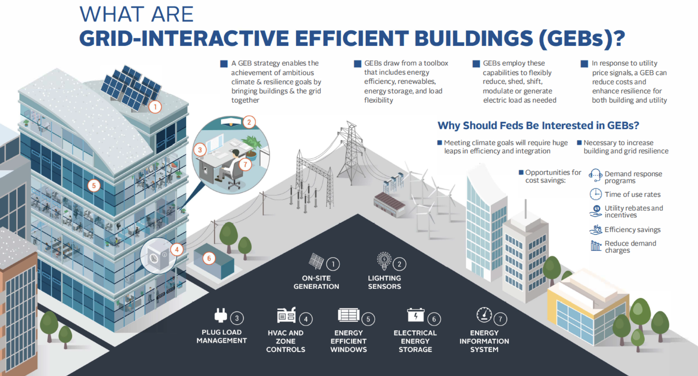

Smart buildings integrate renewables, storage, AI, and efficiency
In the coming decades, buildings will become ever smarter about using, generating, and storing energy. Advances in the cost of solar and batteries will lead to an increasing deployment of solar panels on building rooftops, and batteries inside buildings to provide backups to the grid, to shift energy usage to the lowest-cost time. AI will manage building energy use to optimize grid utilization, energy storage, EV charging, and other aspects of energy production and energy consumption. Advances in new building materials will increase building energy efficiency. Combining these technologies will make buildings an active player in balancing and maintaining the grid, allow more integration of renewables, and provide cheaper, more comfortable, and more resilient energy to building dwellers.
GSA's Grid-Interactive Efficient Buildings. Source: US Dept of Energy